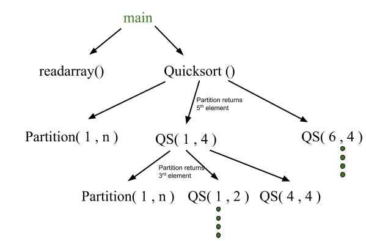
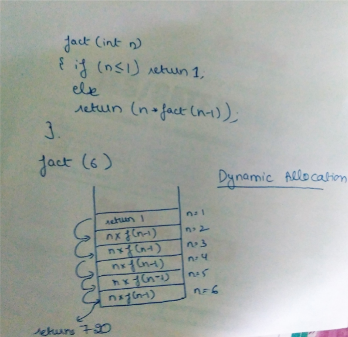
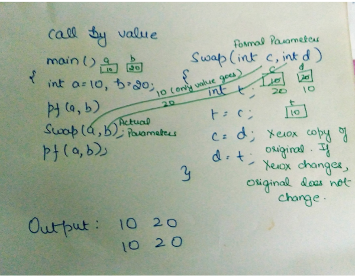
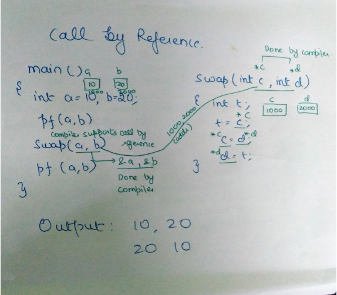
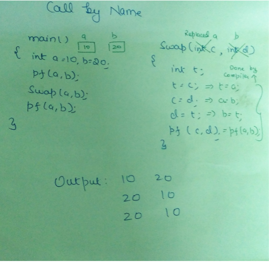

A translation needs to relate the static source text of a program to the dynamic actions that must occur at runtime to implement the program. The program consists of names for procedures, identifiers etc., that require mapping with the actual memory location at runtime.
Runtime environment is a state of the target machine, which may include software libraries, environment variables, etc., to provide services to the processes running in the system.
SOURCE LANGUAGE ISSUES
Activation Tree
A program consist of procedures, a procedure definition is a declaration that, in its simplest form, associates an identifier (procedure name) with a statement (body of the procedure). Each execution of procedure is referred to as an activation of the procedure. Lifetime of an activation is the sequence of steps present in the execution of the procedure. If ‘a’ and ‘b’ be two procedures then their activations will be non-overlapping (when one is called after other) or nested (nested procedures). A procedure is recursive if a new activation begins before an earlier activation of the same procedure has ended. An activation tree shows the way control enters and leaves activations.
Properties of activation trees are :-
- Each node represents an activation of a procedure.
- The root shows the activation of the main function.
- The node for procedure ‘x’ is the parent of node for procedure ‘y’ if and only if the control flows from procedure x to procedure y.
Example – Consider the following program of Quicksort
main() {
Int n;
readarray();
quicksort(1,n);
}
quicksort(int m, int n) {
Int i= partition(m,n);
quicksort(m,i-1);
quicksort(i+1,n);
}
The activation tree for this program will be:

First main function as root then main calls readarray and quicksort. Quicksort in turn calls partition and quicksort again. The flow of control in a program corresponds to the depth first traversal of activation tree which starts at the root.
CONTROL STACK AND ACTIVATION RECORDS
Control stack or runtime stack is used to keep track of the live procedure activations i.e the procedures whose execution have not been completed. A procedure name is pushed on to the stack when it is called (activation begins) and it is popped when it returns (activation ends). Information needed by a single execution of a procedure is managed using an activation record or frame. When a procedure is called, an activation record is pushed into the stack and as soon as the control returns to the caller function the activation record is popped.

A general activation record consist of the following things:
- Local variables: hold the data that is local to the execution of the procedure.
- Temporary values: stores the values that arise in the evaluation of an expression.
- Machine status: holds the information about status of machine just before the function call.
- Access link (optional): refers to non-local data held in other activation records.
- Control link (optional): points to activation record of caller.
- Return value: used by the called procedure to return a value to calling procedure
- Actual parameters
Control stack for the above quicksort example:


SUBDIVISION OF RUNTIME MEMORY
Runtime storage can be subdivide to hold :
- Target code- the program code , it is static as its size can be determined at compile time
- Static data objects
- Dynamic data objects- heap
- Automatic data objects- stack

STORAGE ALLOCATION TECHNIQUES
I. Static Storage Allocation
- For any program if we create memory at compile time, memory will be created in the static area.
- For any program if we create memory at compile time only, memory is created only once.
- It don’t support dynamic data structure i.e memory is created at compile time and deallocated after program completion.
- The drawback with static storage allocation is recursion is not supported.
- Another drawback is size of data should be known at compile time
Eg- FORTRAN was designed to permit static storage allocation.
II. Stack Storage Allocation
- Storage is organised as a stack and activation records are pushed and popped as activation begin and end respectively. Locals are contained in activation records so they are bound to fresh storage in each activation.
- Recursion is supported in stack allocation
III. Heap Storage Allocation
- Memory allocation and deallocation can be done at any time and at any place depending on the requirement of the user.
- Heap allocation is used to dynamically allocate memory to the variables and claim it back when the variables are no more required.
- Recursion is supported.

PARAMETER PASSING
The communication medium among procedures is known as parameter passing. The values of the variables from a calling procedure are transferred to the called procedure by some mechanism.
Basic terminology :
- R- value: The value of an expression is called its r-value. The value contained in a single variable also becomes an r-value if its appear on the right side of the assignment operator. R-value can always be assigned to some other variable.
- L-value: The location of the memory(address) where the expression is stored is known as the l-value of that expression. It always appears on the left side if the assignment operator.

i.Formal Parameter: Variables that take the information passed by the caller procedure are called formal parameters. These variables are declared in the definition of the called function.
ii.Actual Parameter: Variables whose values and functions are passed to the called function are called actual parameters. These variables are specified in the function call as arguments.
Different ways of passing the parameters to the procedure
- Call by Value
In call by value the calling procedure pass the r-value of the actual parameters and the compiler puts that into called procedure’s activation record. Formal parameters hold the values passed by the calling procedure, thus any changes made in the formal parameters does not affect the actual parameters. - Call by ReferenceIn call by reference the formal and actual parameters refers to same memory location. The l-value of actual parameters is copied to the activation record of the called function. Thus the called function has the address of the actual parameters. If the actual parameters does not have a l-value (eg- i+3) then it is evaluated in a new temporary location and the address of the location is passed. Any changes made in the formal parameter is reflected in the actual parameters (because changes are made at the address).

- Call by Copy Restore
In call by copy restore compiler copies the value in formal parameters when the procedure is called and copy them back in actual parameters when control returns to the called function. The r-values are passed and on return r-value of formals are copied into l-value of actuals.

- Call by Name
In call by name the actual parameters are substituted for formals in all the places formals occur in the procedure. It is also referred as lazy evaluation because evaluation is done on parameters only when needed.